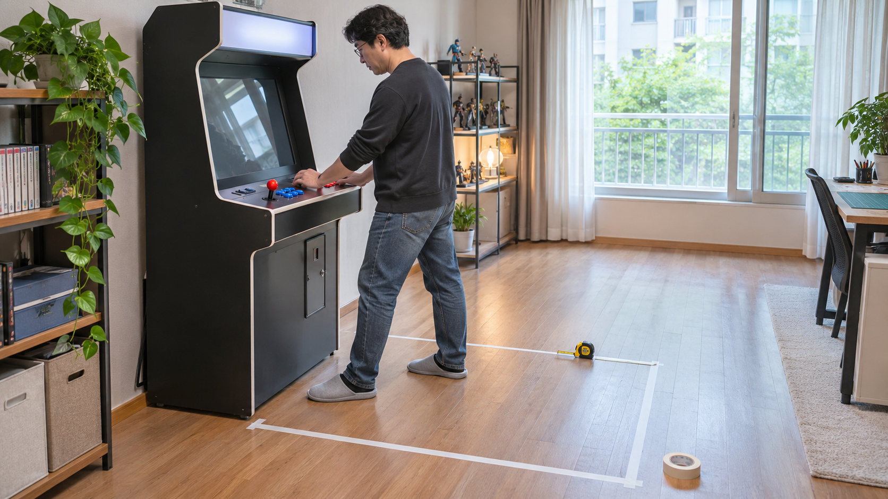

오락기 조작부 앞 공간은 정해진 한 가지 수치보다 실제 사용자가 서거나 앉아 조작할 때의 발 위치, 팔과 몸의 움직임, 1·2인 사용 여부를 기준으로 확보해야 합니다. 설치 전에 바닥에 제품 폭과 조작 위치를 표시하고, 의자에 앉거나 두 사람이 나란히 서서 버튼을 누르는 동작까지 시험하세요. 뒤로 물러설 때 문·가구·케이블과 부딪히지 않고 다른 사람이 지나갈 통로가 남아야 합니다.

조작 자세로 필요한 앞 공간을 직접 확인하세요
제품을 놓을 위치를 정한 뒤 조작부 앞에 서거나 사용할 의자에 앉아 발과 무릎, 팔꿈치가 움직이는 범위를 확인하세요. 버튼을 누르고 조이스틱을 좌우로 움직인 다음 한 걸음 뒤로 물러날 때 벽이나 가구에 닿지 않는지 살펴보세요. 설치 전에는 제품 폭과 조작부 위치를 분리 가능한 바닥 표시로 잡고, 표시 안에서 실제 동작을 반복해 보세요.
조작부 앞 공간은 사용자의 발 위치와 팔·몸의 움직임을 실제 자세에서 확인해 정해야 합니다.
노리박스 공개 제품 목록에는 20+ 테이블형, 24+ 좌식형, 27+와 32+ 계열 제품, TV 연결형 분리기통이 각각 안내되어 있습니다. 제품 형태에 따라 서는 위치와 의자 사용 여부, 조작부가 놓이는 높이가 다를 수 있으므로 한 제품의 앞 공간을 다른 제품에 그대로 적용하지 마세요. 전체 설치 면적을 재는 방법은 가정용 오락기 설치 공간 측정 방법에서 확인할 수 있습니다.
두 사람이 함께 쓰면 좌우 움직임까지 확인하세요
2인용 조작부를 사용할 계획이라면 두 사람이 나란히 서거나 앉아 조이스틱과 버튼을 동시에 움직여 보세요. 어깨와 팔꿈치가 서로 부딪히지 않는지, 한 사람이 자리를 바꿀 때 다른 사람과 조작부 사이를 억지로 지나가지 않아도 되는지 확인하세요. 가족마다 키와 자세가 다르면 가장 자주 함께 사용할 조합으로 여러 번 시험하는 편이 좋습니다.
두 사람이 함께 사용할 때는 앞뒤 거리뿐 아니라 어깨와 팔꿈치가 움직이는 좌우 범위도 확인해야 합니다.
- 한 사람이 조작할 때의 발과 무릎 위치
- 두 사람이 동시에 조작할 때의 어깨·팔꿈치 범위
- 자리를 바꾸거나 뒤로 물러날 때의 이동 경로
- 문·가구·케이블과 부딪히지 않는 통로
조작부 형태별 확인 기준은 오락기 조작부 형태 비교 방법도 참고하세요.
의자와 통로는 조작 공간과 분리하세요
좌식형이나 테이블형처럼 의자를 함께 쓰는 경우에는 앉은 상태뿐 아니라 의자를 빼고 일어서는 동작까지 확인하세요. 사용하지 않는 의자를 조작부 앞이나 뒤 통로에 그대로 두지 말고, 별도의 보관 위치를 정해 문과 이동 경로를 막지 않게 하세요. 전원선과 화면선은 발과 의자 바퀴가 지나가는 곳을 피하고 조작부 앞 바닥을 가로지르지 않도록 배치하세요.
의자를 빼고 일어서는 범위와 사람이 지나가는 통로는 조작 영역과 겹치지 않게 나누어야 합니다.
의자 높이와 받침대를 함께 검토하려면 가정용 오락기 의자와 받침대 고르는 방법을 참고하세요.
설치 뒤 바닥 표시와 사진으로 다시 확인하세요
설치가 끝나면 바닥 표시를 기준으로 실제 사용자 한 명과 두 명이 각각 조작해 보고, 뒤로 물러설 때 남는 공간을 확인하세요. 문을 열고 의자를 빼며 청소 도구를 움직여도 본체와 케이블에 닿지 않는지 살펴보세요. 조작 중 본체가 밀리거나 통로가 막히면 배치를 다시 검토하고, 정확한 제품명과 설치 사진을 준비해 판매자에게 문의하세요.
설치 완료 뒤에는 실제 조작과 자리 이동, 문과 의자의 움직임을 같은 위치에서 다시 시험하세요.
현재 노리박스 오락실게임기와 조작부 형태는 제품자세히보기에서 확인할 수 있습니다.